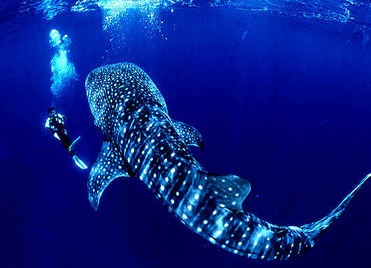

The whale shark is a the biggest shark and the biggest fish. Although massive, whale sharks are docile fish and sometimes allow swimmers to hitch a ride. They are currently listed as a vulnerable species; however, they continue to be hunted in parts of Asia, such as the Philippines.
As the largest fish in the sea, reaching lengths of 40 feet (12 meters) or more, whale sharks have an enormous menu from which to choose. Fortunately for most sea-dwellers—and us!—their favorite meal is plankton. They scoop these tiny plants and animals up, along with any small fish that happen to be around, with their colossal gaping mouths while swimming close to the water's surface.
The whale shark's flattened head sports a blunt snout above its mouth with short barbels protruding from its nostrils. Its back and sides are gray to brown with white spots among pale vertical and horizontal stripes, and its belly is white. Its two dorsal fins are set rearward on its body, which ends in a large dual-lobbed caudal fin (or tail).
Preferring warm waters, whale sharks populate all tropical seas. They are known to migrate every spring to the continental shelf of the central west coast of Australia. The coral spawning of the area's Ningaloo Reef provides the whale shark with an abundant supply of plankton.